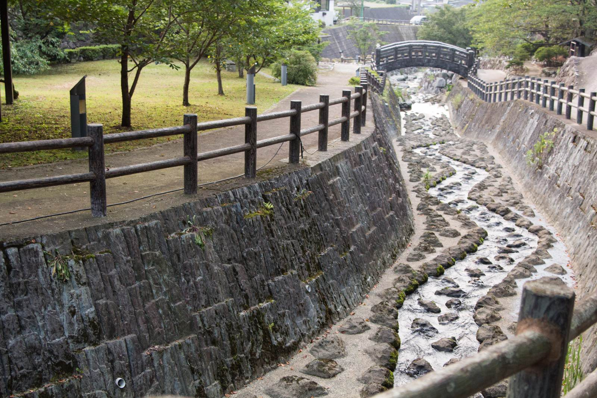
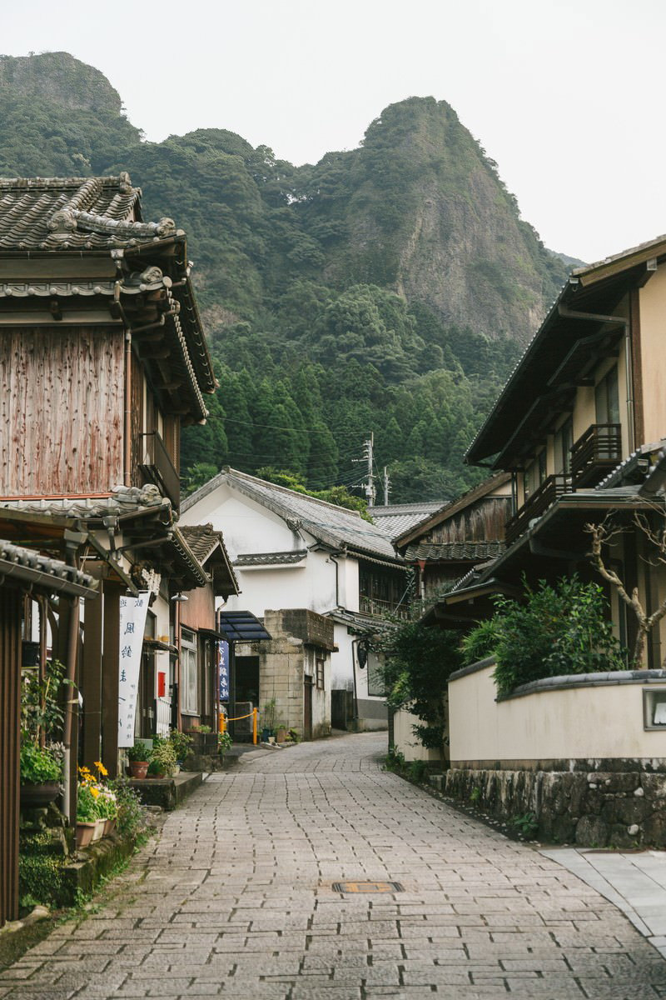
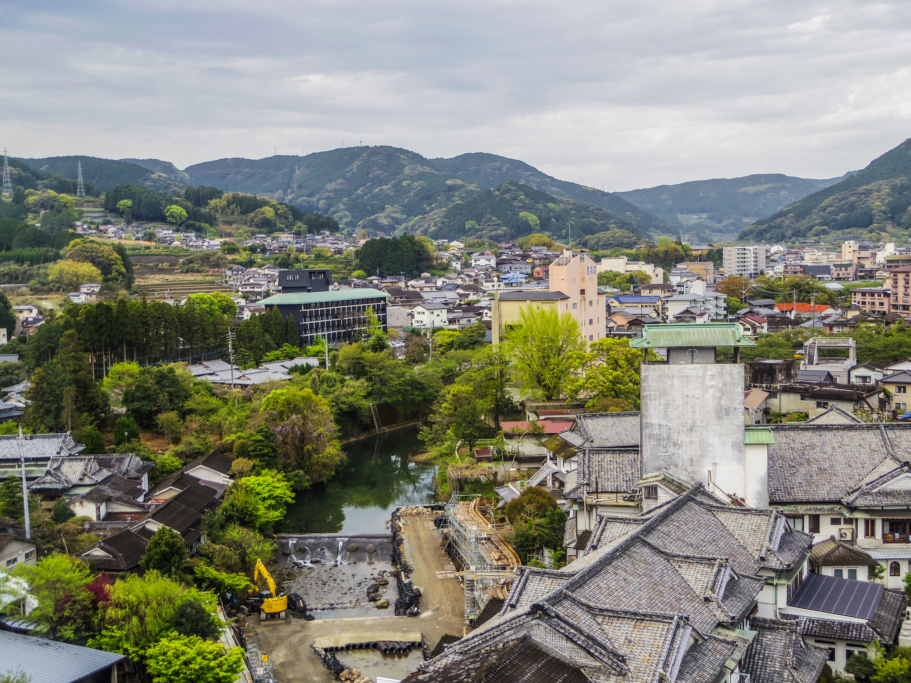
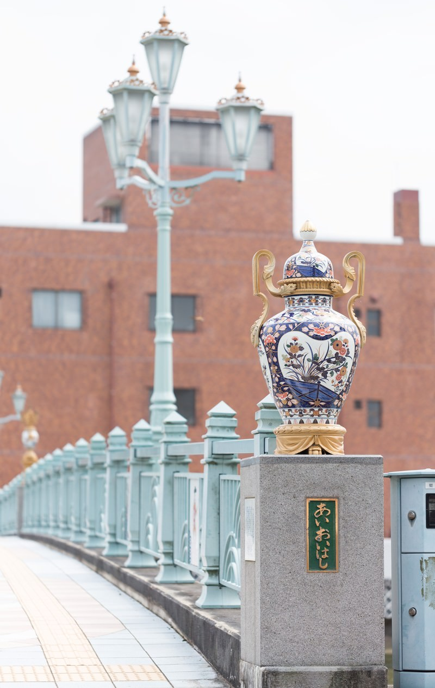

10:00

伊万里川を散策
伊万里の街を流れる伊万里川の景色を眺めながら、 ゆっくりと旅をスタートします。
佐賀をゆっくり楽しむ、小さな旅へ。
佐賀の景色やグルメ、温泉をゆっくり楽しむ1泊2日のモデルコースです。 佐賀ならではの魅力を感じながら、小さな旅を楽しんでみませんか。
10:00

伊万里の街を流れる伊万里川の景色を眺めながら、 ゆっくりと旅をスタートします。
12:00

佐賀を代表するグルメ、佐賀牛を味わいます。 柔らかな肉質と豊かな味わいをゆっくり楽しみます。
14:30

伊万里焼の窯元が集まる大川内山へ。 山あいの景色と歴史ある街並みをゆっくり散策します。
17:00

1日の旅の終わりは嬉野温泉へ。 温泉でゆっくりと疲れを癒し、佐賀での夜を楽しみます。
9:00

温泉で迎える朝は、ゆったりとした時間を楽しみます。 温泉街の穏やかな雰囲気を感じながら、2日目の旅を始めます。
10:30

嬉野を代表する名物、温泉湯どうふを味わいます。 とろりとした食感とやさしい味わいを楽しみます。
13:00
嬉野から武雄へ移動し、街をゆっくり散策します。 佐賀の歴史や文化を感じながら、のんびりとした時間を楽しみます。
15:30
佐賀の景色や文化を楽しみながら、1泊2日の小さな旅を締めくくります。 思い出を振り返りながら、ゆっくりと帰路につきます。
モデルコースと合わせて楽しみたい、佐賀のおすすめスポットをご紹介します。
伊万里焼の窯元が集まる、山あいの美しいエリア。 歴史ある街並みを眺めながら、ゆっくり散策を楽しめます。
伊万里の街を流れる川沿いで、ゆっくりとした時間を楽しめるスポットです。 街歩きとあわせて、穏やかな景色を眺めながら散策できます。

伊万里の街歩きとあわせて立ち寄りたいスポットです。 周辺の景色を楽しみながら、のんびりと散策できます。
佐賀の小さな旅を、ゆっくり楽しむためのポイントをご紹介します。
観光地を急いで巡るのではなく、景色や街並みを楽しみながら、 ゆったりとしたスケジュールで佐賀を楽しみましょう。
街歩きや自然の中を散策するスポットもあるため、 歩きやすい靴や服装で楽しむのがおすすめです。
佐賀では季節によってさまざまな景色を楽しめます。 訪れる季節ならではの自然や街の雰囲気にも目を向けてみましょう。